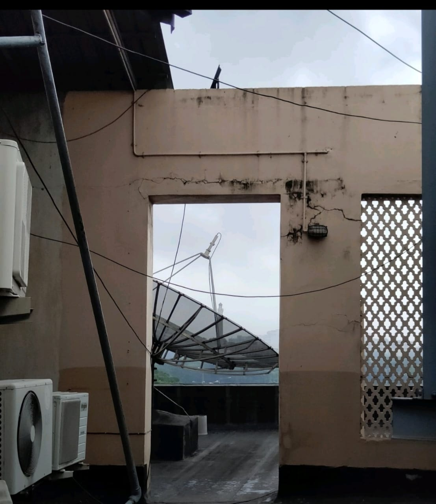
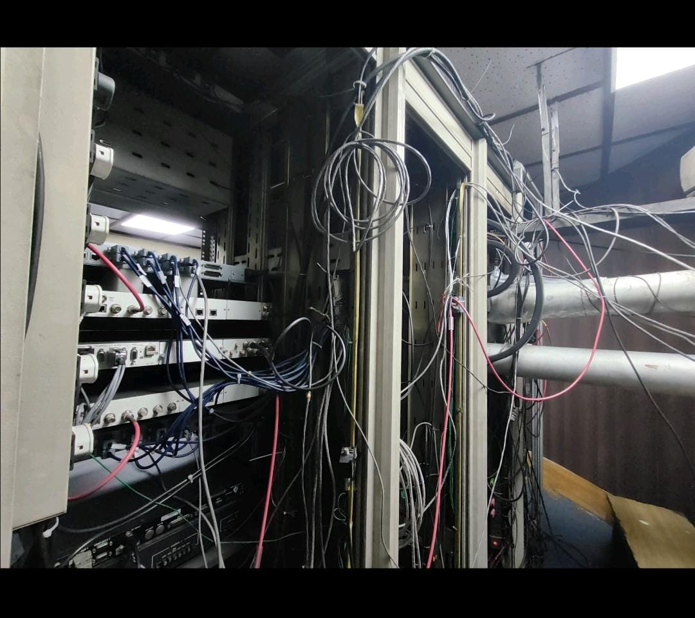

A valuable 2 month training at AIR.Herein I learnt how satellite communication technologies, radio communication control rooms work.
Besides they also took us to the archive where we heard voices long left for instance voice of Rabindranath Tagore and it was an insighful 2 month for me .

